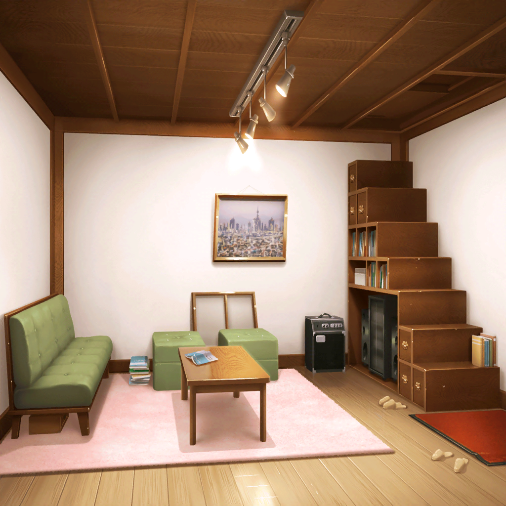

市ヶ谷家 蔵
有咲
赤と黄色、青も使って虹みたいに……
んー、派手すぎる気がするな
有咲
新しい衣装に合わせるリストバンドだし、多少派手でも……
いや、やっぱもうちょっと落ち着いた色のほうがいいか？
りみ
わ、そのリストバンドすっごいかわいいね
有咲
ま、マジでそう思うか？
私的には、ちょっと派手すぎるかなーって思ってるんだけど？
りみ
ううん！ そんなことないよ！
新しい衣装の色合いにぴったりだと思うよ
有咲
……ったく、こういうのあんまり得意じゃねーんだけどな……
有咲
ん？
りみは今何やってるんだ？
りみ
あ、私は……
ちょっとこれを見てほしいんだけど……
有咲
それは、もしかしてヘアアクセの下書きか？
へぇ～、結構いい感じにできてるじゃん
りみ
えへへ、ありがとう。
新しい衣装に合いそうだから、星にしてみたの
有咲
なるほど〜。いいな！
衣装と一緒に着けるのが楽しみだな
りみ
ありがとう！
……けど、星の形を描くのって意外と難しいね。
こんな感じでいいと思う？
有咲
そうだなー、うーん……
なんか、ちょっと歪んでる感じに見えるけど……
りみ
や、やっぱりそうだよね？
ちゃんとコンパスと分度器使ったんだけど、
なかなか難しくって
有咲
それ、ちょっと貸してみ
りみ
え？ 描いてくれるの？
有咲
まあ、任せとけって
りみ
うん！ ありがとうね！
有咲
えっと、星形ってことは……
まずこうやって正五角形を描いて……
それで、あとは五角形の対角線を繋げば……
有咲
描けた。
ほら、こんな感じだろ？
りみ
わっ！ すごい！ キレイな星になったよ！
さすが有咲ちゃん、ありがとう！
有咲
べ、別に、こんなの中学の数学でやっただろ。
それにアクセの形が歪んでたら、カッコつかねーし
りみ
……やっぱり、有咲ちゃんってすごいね～。
本当になんでもできちゃうもん！
有咲
て、てかっ、星を描いただけだから！
そんなに感心するようなことじゃねーだろ！？
りみ
そんなことないよ～！
有咲ちゃんが作ってたリストバンドもすごく素敵だし、
星もぱぱーってキレイに描いちゃうし、ホントにすごいと思うな
有咲
や、やめろって……っ！
りみ
それじゃあ、こんな感じのデザインでいいかな？
有咲
ちょ、ちょっと待った！
この星の形だけど、角がちょっととんがりすぎてる
感じするから、全体的にもうちょい丸くした方がよくね？
りみ
え？ 角を丸く……？
……あ、確かに、そうした方がもっとポピパっぽくなるかも！
有咲
だろ！？
私もそう思ったんだよ！
りみ
うん、それいいね！
そうしたら、このとんがってる部分をコンパスで……
有咲
いやいや、そうじゃなくって、
コンパスの針をここに置けば……
ほら、こんなふうに角がいい感じで丸くなるだろ？
りみ
わわっ、すごいよ、有咲ちゃん！
有咲
だ、だから別にすごくはねーって……っ！
りみ
（なんだかんだ言って、有咲ちゃんって……
ポピパのこと、大好きだよね）
有咲
な、なに笑ってるんだよ、りみ
りみ
ふふっ。
ううん、なんでもないよ
有咲
ちょ、ちょっと、なんなんだよー！？